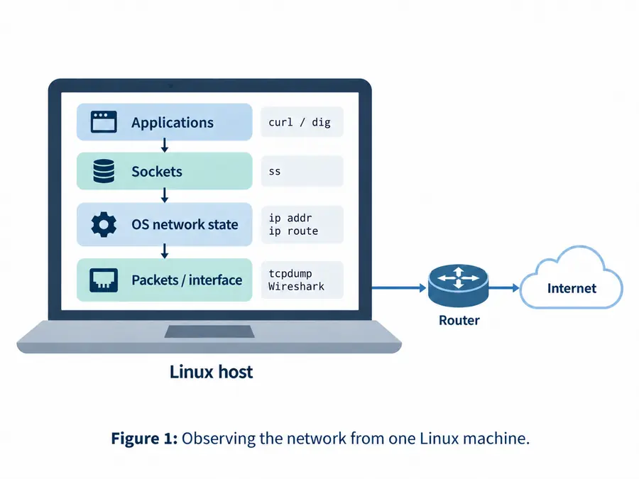

Taller · Preparación del laboratorio
Taller — Aprender a observar la red
¿Cómo observamos y controlamos las redes desde una máquina Linux?

Descargar capítulo + laboratorio para estudio sin conexión (.zip)lección + práctica guiada + comprobación + laboratorio + archivos necesarios
Por qué importa este capítulo
Sección titulada «Por qué importa este capítulo»Un experimento de redes puede fallar porque el protocolo está mal, porque el host está mal configurado, porque falta una herramienta, porque una ruta apunta a un lugar inesperado o porque se está observando la interfaz equivocada.
Antes de construir protocolos de transporte, routers, política BGP, overlays o servicios distribuidos, necesitamos una forma repetible de responder una pregunta más sencilla:
¿Qué cree actualmente este host Linux acerca de la red y qué evidencia respalda esa creencia?
M00 establece el vocabulario de evidencia que utilizaremos durante todo el libro. El objetivo no es memorizar cada comando, sino aprender qué vista del sistema responde qué pregunta.
Deténgase y prediga.
curl https://example.com/falla. ¿Eso permite saber si el fallo está en DNS, enrutamiento, TCP, TLS, HTTP o el servicio remoto? No.curles útil precisamente porque atraviesa muchas dependencias, pero por la misma razón no identifica por sí solo la causa raíz.
1. El host local ya es un sistema de red completo
Sección titulada «1. El host local ya es un sistema de red completo»Incluso antes de crear una topología de laboratorio, un host Linux contiene estado como:
procesos
↓
sockets
↓
interfaces + direcciones
↓
rutas + estado de vecinos
↓
colas / firewall / políticas
↓
NIC + driver + enlace físico/virtualTambién contiene configuración del resolver, cachés locales, namespaces e interfaces virtuales.
Una solicitud Web puede atravesar varias de estas estructuras antes de que una trama salga de la máquina.
Este es el primer hábito de sistemas del curso:
No trate “la red” como una caja negra cuando el host ya expone estado que puede inspeccionarse.
2. Las interfaces definen dónde puede asociar el kernel estado de red
Sección titulada «2. Las interfaces definen dónde puede asociar el kernel estado de red»Una interfaz es un punto de conexión de red visible para el sistema operativo. Puede representar:
- loopback,
- Ethernet o Wi-Fi físico,
- un extremo de Ethernet virtual,
- un bridge,
- un túnel,
- un dispositivo VPN,
- una conexión de contenedor o máquina virtual.
Inspeccione con:
ip link
ip addressFormule cuatro preguntas:
- ¿La interfaz existe y está operativa?
- ¿Qué direcciones y prefijos tiene?
- ¿Es la interfaz que realmente selecciona la ruta?
- ¿Está en el namespace que usted supone?
Nombres como eth0 son convenciones, no verdades universales. Inspeccione siempre la máquina real.
3. Loopback es un camino real de protocolos sin red física
Sección titulada «3. Loopback es un camino real de protocolos sin red física»La interfaz de loopback permite utilizar IP y transporte normalmente sin enviar paquetes a un medio externo.
Los experimentos con localhost son útiles porque conservan:
- semántica de sockets,
- estado de transporte,
- framing de aplicación,
- gran parte de los caminos de código del kernel,
mientras eliminan variables como Wi-Fi, switches, routers y enrutamiento de Internet.
Un experimento localhost exitoso demuestra menos que uno remoto, pero muchas veces demuestra exactamente la capa que necesitamos aislar primero.
4. Direcciones y prefijos describen identidad local y ámbito de enrutamiento
Sección titulada «4. Direcciones y prefijos describen identidad local y ámbito de enrutamiento»Una dirección como:
192.0.2.20/24contiene una dirección y una longitud de prefijo.
En M00 basta reconocer que la longitud del prefijo influye en qué destinos se consideran directamente conectados y cuáles requieren otra ruta o gateway.
Inspeccione con:
ip addressCapítulos posteriores formalizan subnetting y longest-prefix matching. Aquí el objetivo es aprender a leer el estado que ya mantiene el kernel.
5. El estado de rutas responde “¿hacia dónde iría este destino?”
Sección titulada «5. El estado de rutas responde “¿hacia dónde iría este destino?”»Antes de transmitir un paquete IP, el kernel selecciona una ruta.
Comandos útiles:
ip route
ip route get 198.51.100.10Una ruta puede identificar:
- prefijo de destino,
- siguiente salto,
- interfaz de salida,
- métrica o información de política.
ip route get es especialmente útil porque pregunta al kernel qué ruta utilizaría para un destino concreto.
Eso es evidencia más fuerte que mirar la tabla y adivinar.
6. La ruta por defecto es un fallback, no el destino final
Sección titulada «6. La ruta por defecto es un fallback, no el destino final»Una línea como:
default via 192.0.2.1 dev eth0significa aproximadamente:
“Para destinos que no coincidan con una ruta más específica, envíe hacia este siguiente salto mediante esta interfaz.”
El gateway suele ser el siguiente router, no el servidor remoto final.
M05 explicará por qué los prefijos más específicos ganan a la ruta por defecto. Por ahora distinga:
destino IP final
≠
siguiente salto local7. El estado de vecinos responde “¿cómo alcanzo ese siguiente salto en este enlace?”
Sección titulada «7. El estado de vecinos responde “¿cómo alcanzo ese siguiente salto en este enlace?”»Una ruta IP puede elegir un siguiente salto y una interfaz, pero la entrega tipo Ethernet todavía necesita una dirección de enlace.
Inspeccione:
ip neighLas entradas pueden aparecer como reachable, stale, incomplete, failed u otros estados del sistema.
La dependencia es:
ruta IP utilizable
+
resolución utilizable del siguiente salto
↓
se puede construir la trama de entrega localM04 estudia ARP y Neighbor Discovery de IPv6 en detalle.
8. Los sockets conectan procesos de aplicación con estado de transporte
Sección titulada «8. Los sockets conectan procesos de aplicación con estado de transporte»Los sockets son extremos de comunicación expuestos por el sistema operativo.
Vistas útiles:
ss -lntup
ss -tn
ss -unUn socket TCP en escucha demuestra que el host local tiene un extremo esperando en una dirección/puerto dentro de su namespace y contexto de privilegios actuales.
No demuestra que:
- un cliente remoto tenga una ruta hasta él,
- un firewall permita el tráfico,
- TLS funcione,
- la aplicación responda correctamente.
Los puertos son extremos de transporte, no puertos físicos de switches.
9. Procesos, namespaces y privilegios cambian lo que puede verse y modificarse
Sección titulada «9. Procesos, namespaces y privilegios cambian lo que puede verse y modificarse»Algunos detalles de sockets, operaciones de rutas, configuración de colas y capturas requieren privilegios elevados.
El curso no debe normalizar “ejecutar todo como root”.
Prefiera:
- privilegio mínimo,
- namespaces/contenedores desechables para cambios destructivos,
- teardown explícito,
- separación clara entre observar y modificar.
M12 utilizará namespaces como objetos de red de primera clase. En M00 basta recordar que dos procesos en el mismo host físico pueden ver redes diferentes.
10. Las herramientas DNS responden preguntas de nombres
Sección titulada «10. Las herramientas DNS responden preguntas de nombres»dig expone evidencia orientada a DNS:
dig example.comInspeccione:
- nombre y tipo de consulta,
- registros de respuesta,
- TTL,
- código de respuesta,
- resolver/servidor utilizado.
Una respuesta DNS correcta demuestra algo sobre la resolución de nombres en ese punto de observación.
No demuestra que el servicio resultante sea alcanzable o esté sano.
Además, una aplicación puede utilizar bibliotecas de resolución, cachés locales, proxies o caminos de resolución distintos de una llamada directa a dig.
11. Las herramientas de aplicación son probes amplios extremo a extremo
Sección titulada «11. Las herramientas de aplicación son probes amplios extremo a extremo»curl es útil porque puede exponer varias etapas de una interacción HTTP(S):
curl -v https://example.com/Según la solicitud y la compilación puede mostrar evidencia de:
- resolución de nombres,
- dirección elegida,
- conexión de transporte,
- negociación TLS,
- solicitud/respuesta HTTP.
Esa amplitud es fortaleza y limitación.
Cuando curl falla, pregunte qué dependencia anterior debe aislarse en lugar de tratar el mensaje final como causa raíz.
12. Una captura muestra tráfico en un punto de observación concreto
Sección titulada «12. Una captura muestra tráfico en un punto de observación concreto»Herramientas comunes:
tcpdump,- TShark,
- Wireshark.
Por ejemplo:
tcpdump -ni anyUna captura es un registro temporal del tráfico visible en ese punto de captura.
No es un volcado de todo el sistema distribuido.
Un paquete puede existir en otro lugar sin aparecer allí, y offloads o encapsulación pueden hacer que el mismo intercambio lógico se vea distinto en interfaces diferentes.
13. Capture únicamente tráfico que esté autorizado a inspeccionar
Sección titulada «13. Capture únicamente tráfico que esté autorizado a inspeccionar»Los experimentos del curso deben preferir:
- su propio host,
- loopback,
- namespaces/contenedores,
- PCAP suministrados,
- servicios controlados de laboratorio.
No capture tráfico de otros usuarios en redes compartidas.
Es una regla ética y también buen diseño experimental: el tráfico controlado es más fácil de interpretar.
14. Los timestamps son mediciones con supuestos
Sección titulada «14. Los timestamps son mediciones con supuestos»Los timestamps de paquetes son útiles para analizar latencia, pero dependen de:
- lugar de captura,
- fuente de reloj,
- resolución temporal,
- buffering de kernel/NIC,
- offloads,
- si el evento ocurrió antes o después del punto observado.
Que un número tenga seis decimales no significa que sea exacto a seis decimales.
M02 y M13 retomarán calidad y reproducibilidad de mediciones.
15. Los offloads pueden hacer que los paquetes visibles en el host difieran de los del medio físico
Sección titulada «15. Los offloads pueden hacer que los paquetes visibles en el host difieran de los del medio físico»NICs y kernels modernos pueden realizar:
- checksum offload,
- segmentation offload,
- agregación de recepción,
- batching,
- otras aceleraciones.
Una captura dentro del host puede mostrar tamaños o estados de checksum diferentes de la representación final en el medio físico.
Eso no implica necesariamente un bug de Wireshark o de la NIC.
Es evidencia de que la captura ocurrió en una frontera concreta de la arquitectura.
16. Use una herramienta para responder una pregunta concreta
Sección titulada «16. Use una herramienta para responder una pregunta concreta»Un flujo útil es:
| Pregunta | Evidencia |
|---|---|
| ¿Qué interfaces/direcciones existen? | ip address |
| ¿Qué ruta elegiría el kernel? | ip route get |
| ¿Está resuelto el siguiente salto? | ip neigh |
| ¿Qué sockets escuchan o están conectados? | ss |
| ¿Qué devuelve DNS? | dig |
| ¿Qué hace la interacción de aplicación? | curl -v |
| ¿Qué paquetes son visibles aquí? | captura de paquetes |
El diagnóstico mejora cuando cada comando tiene un propósito definido antes de ejecutarse.
17. Git y el flujo del curso son local-first
Sección titulada «17. Git y el flujo del curso son local-first»Git no requiere GitHub.
Un estudiante puede trabajar completamente offline con:
git init
git status
git add ...
git commit ...
git logUn repositorio remoto añade colaboración, respaldo y CI opcional, pero el control de versiones sigue siendo local.
Por diseño, una conectividad deficiente o inexistente no debe impedir el trabajo principal del laboratorio.
18. Exportar una tarea crea un workspace independiente
Sección titulada «18. Exportar una tarea crea un workspace independiente»Descargue el ZIP del laboratorio enlazado en el capítulo actual y extráigalo en un directorio propio. Trabaje dentro de assignment/; no necesita acceso al repositorio privado del curso.
El workspace exportado incluye el material necesario, por ejemplo:
- instrucciones/objetivos,
- código inicial,
- pruebas públicas,
- directorio de pruebas del estudiante,
- test runner,
- Makefile,
- fixtures/topologías referenciadas,
- workflow CI opcional cuando esté configurado.
El repositorio exportado debe seguir siendo útil sin acceso al monorepo del curso.
19. Las pruebas transparentes forman parte ejecutable de la especificación
Sección titulada «19. Las pruebas transparentes forman parte ejecutable de la especificación»El runner público admite comandos como:
make list-tests
make test
make test-case CASE=<substring>Se espera que los estudiantes lean las pruebas.
Una prueba transparente no es una fuga del sistema de evaluación. Es un ejemplo concreto de comportamiento que puede estudiarse, extenderse y reproducirse.
El objetivo es comprender el contrato del protocolo/sistema, no adivinar casos ocultos.
20. Las pruebas del estudiante convierten edge cases descubiertos en conocimiento reutilizable
Sección titulada «20. Las pruebas del estudiante convierten edge cases descubiertos en conocimiento reutilizable»Las tareas de programación incluyen:
tests/official/
tests/student/Cuando un estudiante descubre una nueva condición límite, debe convertirla en una prueba bajo tests/student/.
Eso cambia la pregunta de:
“¿Qué truco usará el evaluador?”
hacia:
“¿Qué comportamiento todavía no he especificado o probado?”
Esto se parece mucho más a ingeniería de sistemas real.
21. CI opcional debe repetir la verdad local, no crear un segundo universo de evaluación
Sección titulada «21. CI opcional debe repetir la verdad local, no crear un segundo universo de evaluación»Una tarea exportada puede incluir GitHub Actions.
Su propósito es conveniencia y práctica con CI, no una fuente oculta de corrección.
El invariante es:
pruebas transparentes locales == pruebas CI opcionalesSi GitHub no está disponible, la tarea sigue siendo completamente comprobable en local.
22. Verifique capacidades sin exigir todas las herramientas desde el primer día
Sección titulada «22. Verifique capacidades sin exigir todas las herramientas desde el primer día»Ejecute:
for tool in python3 git ip ss curl dig tcpdump; do
command -v "$tool" || true
doneEl núcleo del curso necesita una base pequeña como Python y Git.
El resto de herramientas es específico por módulo. No aporta valor pedagógico obligar a instalar FRRouting, containerlab, Scapy, Wireshark y cada utilidad diagnóstica antes del módulo que realmente las usa.
Una herramienta opcional ausente es una capacidad del entorno que debe registrarse, no automáticamente un fallo del concepto de red estudiado.
23. Investigación resuelta — explique una solicitud Web exitosa usando varias capas de evidencia
Sección titulada «23. Investigación resuelta — explique una solicitud Web exitosa usando varias capas de evidencia»Suponga que:
curl https://example.com/funciona.
Recoja evidencia como:
ip address
ip route
ip route get <resolved-IP>
ip neigh
ss -tn
dig example.com
curl -v https://example.com/y, cuando esté autorizado, una captura estrecha.
Construya una secuencia:
consulta de nombre / resolución cacheada
↓
dirección de destino seleccionada
↓
ruta local + siguiente salto
↓
conexión de transporte
↓
establecimiento TLS/seguridad
↓
solicitud/respuesta HTTPDespués etiquete cada observación por su fuente:
evidencia de aplicación
estado del kernel
evidencia de paquetesEl ejercicio está completo cuando puede explicar no solo qué ocurrió, sino qué observación respalda cada afirmación.
24. Fallos frecuentes de entorno y razonamiento
Sección titulada «24. Fallos frecuentes de entorno y razonamiento»Falta un comando
Sección titulada «Falta un comando»Es un problema de entorno/herramientas hasta que la evidencia indique otra cosa. Use la alternativa documentada o el fixture determinista suministrado.
No hay privilegio para capturar
Sección titulada «No hay privilegio para capturar»La aplicación puede seguir funcionando. Use PCAP/datasets proporcionados o un namespace/contenedor controlado donde la captura esté permitida.
No hay conectividad con GitHub
Sección titulada «No hay conectividad con GitHub»Git local y las pruebas transparentes locales siguen disponibles por diseño.
Se asume un nombre fijo de interfaz
Sección titulada «Se asume un nombre fijo de interfaz»La máquina puede utilizar enp..., wlp..., interfaces virtuales o nombres propios del namespace. Inspeccione estado real.
Se trata un host virtualizado como “red incorrecta”
Sección titulada «Se trata un host virtualizado como “red incorrecta”»VMs, contenedores, VPN y cloud añaden legítimamente interfaces, rutas, NAT y túneles. Forman parte del sistema.
Se utiliza un solo comando como prueba de todo el camino
Sección titulada «Se utiliza un solo comando como prueba de todo el camino»Un resultado correcto de dig, ping o ss posee un ámbito de autoridad específico. No permita que el éxito de una capa represente todas las demás.
Resumen del capítulo
Sección titulada «Resumen del capítulo»M00 establece la disciplina de evidencia del libro:
- El host ya expone estado de red inspeccionable.
- Interfaces, direcciones, rutas, vecinos, sockets, DNS, herramientas de aplicación y capturas responden preguntas diferentes.
- Una ruta por defecto es un fallback de siguiente salto, no el destino remoto final.
- Las capturas son observaciones locales cuya interpretación depende del punto de captura y de los offloads.
- Use privilegio mínimo y entornos controlados.
- Git, pruebas y tareas siguen un modelo local-first.
- Las pruebas transparentes son especificación ejecutable y las pruebas del estudiante conservan edge cases descubiertos.
- Una investigación sólida declara qué pretende demostrar cada comando antes de ejecutarlo.
Antes de continuar, elija una interacción de red exitosa de su máquina y explíquela usando al menos una evidencia de aplicación, una pieza de estado del kernel y una observación de paquetes o fixture suministrado.
Conexiones de sistemas
Sección titulada «Conexiones de sistemas»Interfaces, rutas, vecinos, sockets, procesos, namespaces, permisos y hooks de captura son estado del sistema operativo.
NICs, drivers, DMA, interrupciones, colas, segmentación, checksums y offloads explican por qué la evidencia visible en host puede diferir de un modelo abstracto de paquetes.
Incluso una solicitud Web sencilla atraviesa componentes de nombres, transporte, seguridad y servicio que pueden fallar de forma independiente.
Privilegio mínimo, autorización de captura, tráfico cifrado y evidencia controlada por el endpoint establecen límites importantes de observación.
Las afirmaciones posteriores de rendimiento dependen de timestamps correctos, descripción de carga, ubicación de captura, contadores y contexto del sistema.
Autocomprobación
Sección titulada «Autocomprobación»Sin volver a leer:
- ¿Qué comando pregunta al kernel por la selección de ruta hacia un destino concreto?
- Distinga estado de
ip routey deip neigh. - ¿Qué demuestra un socket en escucha y qué no demuestra?
- ¿Por qué
curles útil pero demasiado amplio para diagnosticar una causa raíz por sí solo? - ¿Por qué toda captura debe registrar interfaz/punto de captura?
- ¿Qué trabajo principal del curso sigue siendo posible sin acceso a GitHub?
- ¿Dónde deben añadirse las pruebas transparentes propias del estudiante?
- Dé una razón por la que una captura del host puede diferir de los paquetes del medio físico.
- ¿Por qué una herramienta opcional ausente es un hecho del entorno y no automáticamente un fallo del protocolo?
Después complete el laboratorio workbench de M00 y conserve sus notas de línea base para el trabajo de diagnóstico en M13.
Práctica guiada
Sección titulada «Práctica guiada»Tiempo: 8–10 minutos
Materiales: una terminal Linux local; no requiere acceso a Internet
Predicción
Sección titulada «Predicción»Antes de ejecutar comandos, escriba qué espera encontrar en un host normal:
- Al menos una interfaz que no requiera una red física.
- Una o más direcciones IP asociadas a interfaces.
- Una decisión de encaminamiento para tráfico de loopback.
- Cero o más sockets TCP en escucha.
Para cada elemento, indique qué objeto del sistema operativo debería aportar la evidencia: estado de interfaz, estado de direcciones, estado de rutas o estado de sockets.
Ejemplo resuelto
Sección titulada «Ejemplo resuelto»Suponga que un host muestra una interfaz lo con 127.0.0.1/8, una ruta para 127.0.0.0/8 mediante lo y un proceso escuchando en 127.0.0.1:8000.
Una explicación útil no es “la red funciona”. Es más precisa:
- el kernel tiene una interfaz de loopback;
- la dirección pertenece a esa interfaz;
- la ruta mantiene el tráfico coincidente dentro del host;
- un proceso pidió al kernel aceptar conexiones TCP en el puerto 8000.
Cada afirmación depende de un tipo distinto de estado.
Microexperimento guiado
Sección titulada «Microexperimento guiado»Ejecute estos comandos locales y conserve solo las líneas necesarias:
ip -br link
ip -br addr
ip route get 127.0.0.1
ss -ltnResponda:
- ¿Qué interfaz transporta
127.0.0.1en su host? - ¿La búsqueda de ruta hacia
127.0.0.1necesita una puerta de enlace? - Elija un socket en escucha, si existe alguno. ¿Está asociado a loopback, a una dirección no-loopback concreta o a una dirección comodín?
- ¿Qué comando puede demostrar que un proceso está escuchando? ¿Qué comandos no pueden demostrarlo?
No importa si los nombres de interfaces o la lista de sockets difieren entre máquinas. El objetivo es comprender el mecanismo, no memorizar una salida exacta.
Evidencia que debe conservar
Sección titulada «Evidencia que debe conservar»Conserve cuatro hechos breves: uno sobre interfaz, uno sobre dirección, uno sobre ruta y uno sobre socket. Para cada hecho anote el comando que lo sustenta y una afirmación que ese comando no puede demostrar. Debe poder explicar esos límites antes de pasar a la comprobación de conocimientos.
Comprobación de conocimientos
Sección titulada «Comprobación de conocimientos»Responda antes de ejecutar el laboratorio.
- ¿Qué comando usarías para inspeccionar las direcciones de la interfaz? ¿Selección de ruta local para un destino? ¿Estado vecino? ¿Estás escuchando sockets?
- Explique la diferencia entre una ruta IP y una entrada vecina ARP/NDP.
- ¿Por qué una captura de paquetes no puede indicarle cada estado dentro del proceso local o de un enrutador remoto?
- ¿Qué información adicional proporciona
ssque una captura de paquetes no puede proporcionarse directamente? - Si
curlfalla, ¿por qué “la red está cayendo” es un diagnóstico insuficiente? - ¿Qué partes del flujo de trabajo del curso siguen funcionando si GitHub no está disponible durante todo el semestre?
- ¿Cuál es la diferencia entre
tests/official/ytests/student/en una tarea exportada? - ¿Por qué los estudiantes deben inspeccionar
make list-testsen lugar de tratar las pruebas como un comportamiento secreto del calificador? - Indique una razón por la que las descargas de NIC/kernel pueden hacer que una captura del lado del host difiera de la representación final del cable.
Después de responder, registre las herramientas disponibles en su terminal y siga el intercambio HTTP/TCP local por loopback del laboratorio. La comparación DNS/HTTPS conectada es opcional.
Laboratorio obligatorio
Sección titulada «Laboratorio obligatorio»Complete la práctica guiada y la comprobación de conocimientos antes del laboratorio.
Descargar capítulo + laboratorio para estudio sin conexión.
Extraiga el ZIP, lea lesson.md y lab.md, y use assignment/ para los archivos de práctica.
Este laboratorio se basa en observaciones: conserve evidencia reproducible como se describe a continuación. No tiene un evaluador automático.
Este módulo inicial es deliberadamente observacional. Presenta el flujo de trabajo local primero y establece una instantánea de referencia a la que los estudiantes pueden regresar durante módulos posteriores de solución de problemas.
1. Verifique el medio ambiente
Sección titulada «1. Verifique el medio ambiente»En su terminal Linux:
for tool in python3 git ip ss curl dig tcpdump; do
command -v "$tool" || true
doneRegistre qué herramientas de red opcionales están presentes. No instale todo de forma preventiva; los módulos posteriores declaran sus propios requisitos.
2. Predecir antes de inspeccionar
Sección titulada «2. Predecir antes de inspeccionar»Antes de ejecutar cada comando, escriba lo que espera que revele:
ip address
ip route
ss -lntupPara cada uno, identifique si la información pertenece principalmente a la aplicación, socket/OS, red o vista de enlace. Después prediga qué cambiará en ss cuando inicie un servicio HTTP local en el paso siguiente.
3. Siga un intercambio de aplicaciones
Sección titulada «3. Siga un intercambio de aplicaciones»El recorrido obligatorio funciona sin acceso a Internet. En una terminal, inicie un servicio HTTP limitado a loopback:
python3 -m http.server 8000 --bind 127.0.0.1En otra terminal, inspeccione el socket en escucha y realice una solicitud:
ss -lntp
curl -I http://127.0.0.1:8000/Capture el intercambio de loopback con Wireshark/TShark o tcpdump cuando los permisos lo permitan. Si no puede capturar paquetes, conserve como evidencia obligatoria la salida de ss y las cabeceras de la respuesta HTTP.
Cuando exista conectividad a Internet y un resolver configurado, añada esta comparación opcional:
dig example.com
curl -I https://example.com/Compare la evidencia DNS/HTTPS con el intercambio local, pero no trate la conectividad con example.com como requisito de corrección.
Su evidencia obligatoria debe identificar al menos:
- una interfaz local y su dirección IP,
- la interfaz de loopback,
- la ruta por defecto si existe,
- un socket TCP en escucha,
- un intercambio HTTP/TCP local,
- puertos de transporte local y del peer.
Si realizó la comparación conectada opcional, identifique además una consulta/respuesta DNS y el extremo de transporte remoto.
4. Git y pruebas locales
Sección titulada «4. Git y pruebas locales»Conserve sus comandos y observaciones en un archivo de texto local. Inicialice un repositorio Git en su propio directorio de evidencias e inspeccione el estado de trabajo:
git init
git statusLos laboratorios de programación posteriores incluyen un ejecutor independiente y pruebas visibles en sus descargas. Este laboratorio observacional no requiere el código privado del curso ni un workflow de GitHub Actions.
5. Explicar
Sección titulada «5. Explicar»Cree una breve nota técnica que contenga comandos y evidencia de texto en lugar de capturas de pantalla. Responda:
- ¿Qué información proporciona el kernel que no proporciona una captura de paquetes?
- ¿Qué valores cambiaron entre el tráfico local y la comparación DNS/HTTPS, si realizó la extensión opcional?
- ¿Qué podría aprender aun si GitHub no estuviera disponible durante todo el semestre?
- ¿A qué herramienta recurriría primero si un nombre de host se resolviera pero fallara la conexión TCP?
No existe una suite automatizada de aprobado/reprobado para esta práctica de laboratorio: el objetivo de aprendizaje es la observación e interpretación correcta. Las tareas posteriores utilizan el marco de prueba local transparente.